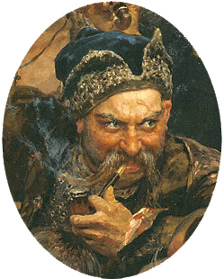

Козак-характерник
- Коза́к-характе́рник
- Коза́к-химоро́дник
- Коза́к-галдо́вник
- Коза́к-заморо́чник--
- назва віщуна, чаклуна на Запорозькій Січі. Займався не лише яснобаченням, але й лікуванням поранених козаків, їх психотерапією та психофізичною підготовкою.
Картина Козак-бандурист Козак Мамай невідомого автора XIX ст..
Національний
художній музей України
Характерник —
своєрідний духовний наставник, якого козаки шанували і дещо побоювались, хранитель традицій і таємниць бойового мистецтва запорозького козацтва. За переказами, кошовий запорожців І. Сірко, якого обирали на цю посаду протягом 24 років, був відомим козацьким характерником. Із часом поняття «козак-характерник» надійно увійшло до наукового обігу.

Історія
Перші згадки про характерників датовані XIX століттям у творах українських літераторів.
Польський історик Бартош Папроцький (1540–1614) лишив спогади про козаків, які не лише замовляли кулі, а й
збирали їх з себе руками і кидали назад у ворогів. Ті, у кого влучали кулі, гинули на місці.
- Найвідомішим козаком-характерником називають Мамая — ідеалізований образ козака-мандрівника, воїна, мудреця, казкаря і характерника в одній особі. Також, за переказами, майже всі козацькі гетьмани, кошові отамани та відомі полковники були характерниками.
-
- Серед них — Остап Дашкевич
- Дмитро Байда-Вишневецький
- Іван Підкова
- Самійло Кішка
- Северин Наливайко
- Петро Сагайдачний
- Максим Кривоніс
- Іван Богун
- Данило Нечай
- і найбільший характерник з них — Іван Сірко
Чи зміг би простий чоловік з такою невеликою купкою товариства самостійно, без чужої допомоги відбитись від далеко більшого і краще озброєного війська турецького і татарського, і більше 30 тисяч яничарів, мов баранів, вирізати між січовими курінями? А хто ж, як не характерник, зміг би вскочити з купкою товариства у самий Крим, кубло великої орди, поруйнувати його городи, вирятувати невільників, що зігнані туди з усіх земель, і взяти велику здобич?
Мартин Пашковський у своїй поемі «Корогва Савроматська в Волохах» (1621 р.), присвяченій Хотинській битві 1621 p. писав:
…З боку (розмістилися) Запорожці, про яких щось розповідають, що ці Молодці дев'ять душ мають…
- Є реальні історичні факти, коли вороги, знаючи, що звичайні кулі характерників не беруть, виготовляли спеціальні срібні кулі та відповідно їх «освячували». Так, в «Історії Русів» є розповідь про вбивство поляками наказного гетьмана Богдана Хмельницького — Івана Золотаренка, якого сучасники вважали характерником:
-
- Наказний гетьман Золотаренко, повертаючись з військом за повелінням Царя всередину Білорусі і проходячи місто Старий Бихів, мушкетним пострілом, що його вчинив з одної дзвіниці католицький органіст Томаш із засідки, був забитий на смерть, а органіст признався добровільно, що підмовлений був на сей злочин католицькими ксьондзами, котрі дали йому кулю од мушкета із священної чаші, за його словами, освячену і скріплену особливими закляттями; а пообіцяно йому за те поряд з мучениками царство Небесне і виховання дітей в школах єзуїтських. І насправді, по огляді виявилася тая куля незвичайною: в ній нуртовина була срібною з латинськими літерами!
- Одним із найсильніших характерників вважали і козака Васюринського. Дмитро Яворницький в 1892 році у своїй «Історії запорізьких козаків» писав, що «то був такий силач, що коли він причащався, то четверо чоловік мусило підтримувати священика, щоб той не впав від одного подмуху богатиря, бо тільки-но він дихне, як від того подиху людина падала з ніг. А коли руйнували Січ, то там був такий силач, що одним подихом міг убити людину»
- Батько гетьмана Івана Підкови — молдавський господар Іван Воде Лютий на прізвисько «Витязь», мав таку богатирську силу, що сам під Кагулом тягнув важку гармату, яку зазвичай тягнули 12 коней.
- Також Д. Яворницький описував характерників як таких, «котрих ні вода, ні шабля, ні звичайна куля, крім срібної, не брали. Такі „характерники“ могли відмикати замки без ключів, плавати човном по підлозі, як по морських хвилях, переправлятися через ріки на повстині чи рогожі, брати голими руками розпечені ядра, бачити на кілька верстов навколо себе за допомогою особливих „верцадел“, жити на дні ріки, залазити й вилазити з міцно зав'язаних чи навіть зашитих мішків, „перекидатися“ на котів, перетворювати людей на кущі, вершників на птахів, залазити у звичайне відро й пливти в ньому під водою сотні і тисячі верстов»
- Андрій Кітович:
« …Поляки вірили сильно, що між гайдамаками багато знаходилося характерників, яких не брали кулі.
Розповідали з клятвою не раз, що бачили гайдамаків змітаючих з себе кулі, які їм в лице чи в груди
потрапляли, що витягали такі кулі з-за пазухи, назад полякам посилали. Для чого наші, забобон забобоном
перемагали, роблячи кулі на гайдамаків, ляли їх на пшеницю свячену, то вже така куля достати мала
гайдамику…
- Характерник був чоловік дуже розумний і знав усяку всячину; його й куля не брала, і шабля не рубала; у нього на все був засіб і спосіб, на все добре слово і користь. Характерники знали всі броди, всі плави по Дніпру і по інших річках; характерник із води виводив сухого та із вогню мокрого; у них була лицарська совість і добросердя…
- Пантелеймон Куліш: уміння козацьких характерників описав у 1846 році в романі «Чорна рада»: « А що, як справді він характерник? Чував я не раз од старих козаків, що сі бурлаки, сидючи там у комишах да в болотах, обнюхуються з нечистим. Викрадали вони з неволі невольників да й самих туркень, іноді так мудро, що справді мов не своєю силою. Не дурно, мабуть, іде між людьми поголоска про їх характерство... Утікає од татар, розстеле на воді бурку да й попливе, сидя, на другий берег... Да й згадав, як у старого Хмельницького сидів у глибці такий, що ману напускав "Що ви,- каже,- що мене стережете? Як схочу, то лиха встережете мене! Ось зав'яжіть мене в мішок". Зав'язали його да й притягли да трямки, аж він і йде з-за дверей: "А що, вражі діти! Встерегли?" "Що ж,- думає,- як і се такий химородник? Піду скоріш, щоб справді не вкоїв він якого лиха".
Северин Наливайко